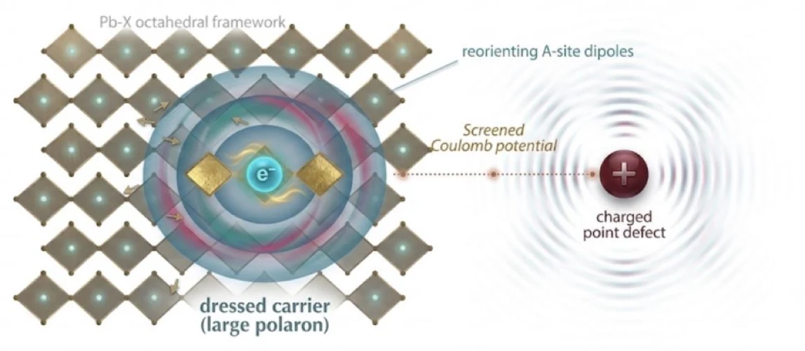

Detailed summary
The question. Carriers in lead-halide perovskites are widely pictured as large polarons, and the lattice distortion travelling with them is routinely invoked to explain defect tolerance — screening of the carrier from charged defects. This review asks what the structural evidence actually establishes.
Three findings that complicate the picture. (1) Time-resolved structural probes now measure the photoinduced lattice distortion directly — yet calculations show that thermal lattice motion alone can produce the effective-mass increase once read as a polaron signature, so a measured distortion is not by itself proof of a polaron. (2) Carrier–lattice coupling strengthens from 3D to 2D, but the Ruddlesden–Popper and Dion–Jacobson families couple through different channels; their contrasting behaviour is set by which channel dominates, not by lattice stiffness alone. (3) The first direct test of defect tolerance does not support polaron screening — its authors credit the soft, disordered lattice — and new transport data show screening reduces carrier–carrier scattering, not capture by defects.
The bottom line. Even if polarons form, that alone does not make them the cause of defect tolerance. Settling it requires measuring the distortion as a function of excitation density, from solar-cell operating densities up to ultrafast-experiment regimes — the experiments this review proposes.

![Schematic: from the soft anharmonic [PbX₃]⁻ framework to dressed quasiparticles, transport and defect phenomenology](highlight_bandlike.webp)